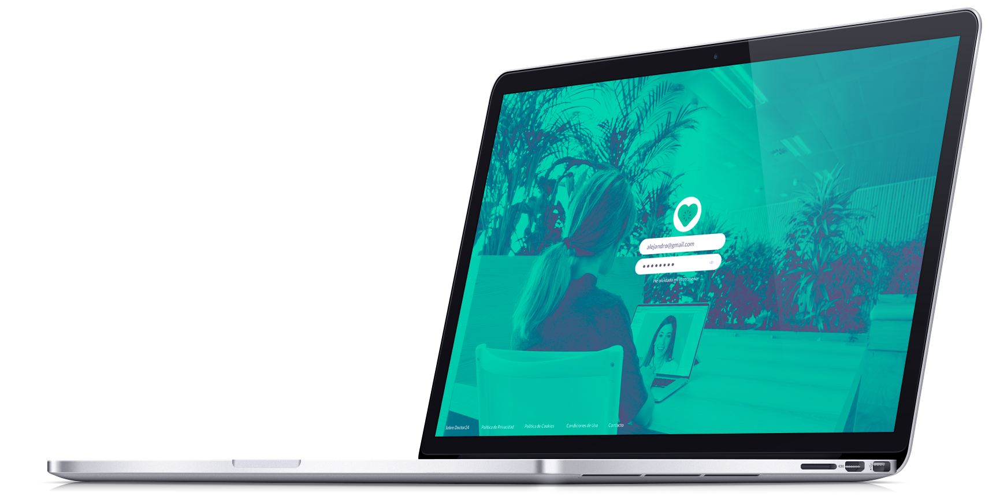

I work for the robots but I fight for the humans.
Making solid Brands and awesome interfaces.
Throughout my short but intense year in my professional career, I have improved my working methodologies and I have started to specialize in digital product designing, more precisely in Visual Design and UI Design.
Besides that, my Graphic Design degree has provided me the required knowledge to be able to make solid brands.
Furthermore, I spent some of my time on learning about Front-end to have a better understanding of the links between the visual/interactive part and the development. Currently I am learning Javascript.
I have been working as a
UI Designer & Visual Designer.
Currently I'm working on Doctor24.
Job history:
Additional skills
#UX_Design #Print_Design #Illustration #Typography #Video_edition #Photography
#Sketch #Invision #Affinity_Designer #Illustrator #Photoshop #After_effect #Indesign #Experience_design #Git #HTML #CSS #jQuery #Sass #Atom #Koala #Slack #Glyphs #Trello
Doctor24
Currently I’m working as a visual designer in Doctor24. But I do the UI Design too. Doctor24 is an online platform which connect pacients with doctors in just a few minutes.
Official Site

Vereda
The Right Way
Vereda is a typographic project created as a result of the analysis and research of the current roadside signage. Vereda is a neo-grotesque typography outstanding because its legibility from a far distance.
Download the book
See more on Behance